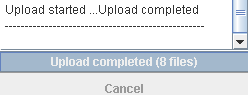

- Resources, Internationalization, Customization-
JFileUpload "resources" parameter allows to modify and translate most UI properties. You can enable it through: <PARAM NAME="resources" VALUE="i18n">. It works with a i18n.properties file - detailed below - available in documentation/tutorials folder. This file must be installed in the same directory as HTML/JavaScript of JFileUpload.
| i18n.properties detailed |
| This text file includes more than 100 properties. A property is defined by a key=value pair. Each property value can be modified. To comment a property, you have to prepend a # at the begining of the line. For instance, to comment "taskoutput.usage=Select or drag and drop file to upload", you just need to add the # char such as "#taskoutput.usage=Select or drag and drop file to upload". Commenting this property will remove the display of the usage line:
Some values could include some {0} string.
It means that such string will be replaced dynamically by JFileUpload. For instance, "progress.bar.upload.done.label=Upload completed ({0} files)" will display the amount of uploaded files. |
 |
i18n.properties is divided in 7 main sections:
- Info panel
All properties of info panel start with "taskoutput.*". It includes all messages displayed in the info panel (textarea in the in middle of the UI) such as Upload started, Upload completed. It includes messages and errors about chunking, compressing, filtering and uploading.
Info panel background and foreground colors could be modified thanks to "taskoutput.color.*" properties. A background image could be added through "taskoutput.image.background=dnd.jpg" property. The image (dnd.jpg) must be in the same directory as the HTML/JavaScript code.
- Progress bar panel
All progress bar panel properties start with "progress.*". It includes messages in progress bar, buttons and panel layout. Default upload messages are simple and short. They could be enhanced by uncommenting from "progress.bar.upload.starting" to "progress.bar.upload.cancelled" properties. For instance, upload ratio will become "Uploading {0}% ({1}) [{2} files left]":
A "Select file(s)" button could be added close to "Cancel" button. Colors, font size and spacing between buttons could be modified too. Even "Cancel" button could be removed. Additional overall progress bar or info such as upload speed, time remaining or elapsed could add added too through "progress.info.*" properties:
- Menus
File, Help and About menus properties start with "menu.*". You can modify File item text through "menu.file.open" property:
You can also hide the menu bar with JFileUpload parameter:
<PARAM NAME="hidebar" VALUE="true">
It only works if you have a registered version of JFileUpload.
- File chooser
File chooser properties start with "filechooser.dialog.*". You can modify file chooser title, buttons, size and tooltips. You can enable/disable multiple file selection. You can also use a generic message when setting up many file extension in whitelist or blacklist parameter.
An optional image preview could be enabled in the file chooser. All file preview properties start with "filechooser.preview.*".
- Authentication pop-up
All authentication pop-up properties start with "authentication.*". It only applies when authentication parameter is enabled as following and authentication is required:
<PARAM NAME="authentication" VALUE="auto">
If username and password are passed as applet parameter then this pop-up should not appear.
- Look and feel
You can apply either a custom or native look and feel to JFileUpload UI through "lookandfeel" property. Default look and feel is the Java one. To switch to native look and feel then uncomment "lookandfeel=auto":
If you want to apply a custom look and feel then setup "lookandfeel" property with fully qualified classname for the look and feel implementation. Also, make sure to declare the look and feel JARs in ARCHIVE HTML/JavaScript parameters of JFileUpload.
- Misc
You can setup your own font (face and size) through "font.*" properties. It could be useful to improve accessiblity. You can disable drag & drop support by uncommenting "#dnd=disabled".
|
| i18n.properties translation |
You can translate all values in i18n.properties. For instance, to translate cancel button from english to spanish then search for "progress.button.cancel" key and replace the value:
"progress.button.cancel=Cancel" by "progress.button.cancel=Cancelar".
If you need to support many languages such as english, spanish, chinese, swedish and more then you have to create one i18n_xy.properties per translation. xy must match to ISO
639 language code (en, es, de, zh ...).
For instance, to add german support :
1 - Copy i18n.properties into
i18n_de.properties.
2 - Translate all resources
in german in i18n_de.properties.
3 - Optionally, use JRE/bin/native2ascii.exe
tool to convert extra characters.
(This step is required for non latin charset such as BIG5 for chinese).
JFileUpload will automatically load i18n_de.properties
if end-user settings are in german. If not then it
will load i18n.properties.
|
| Hide chunks uploading |
JFileUpload allows to split file in chunks before upload. It's useful in HTTP transfer with server-side script that doesnt allow large upload. For instance, default PHP server only allows 2MB upload. Such limit could be increased by updating php.ini but some hosting services doesn't grant access to php.ini. To workaround such limitation, you can setup JFileUpload to cut file in small chunks and upload them one by one through:
<PARAM NAME="chunksize" value="2097152">
<PARAM NAME="chunkmode" value="onfly">
The server-side script will recompose file from chunks once all have been uploaded. However, JFileUpload will display info about each chunk upload in both info panel and progress bar:
You can configure i18n.properties to hide the chunking behavior. First, uncomment "progress.bar.upload.option=chunkratio" property to have the progress bar rely on full size instead of chunk size. Second, comment all the following properties:
taskoutput.split.size=in {0} chunk(s) up to {1} bytes
taskoutput.split.chunk.started=Creating chunk {0} ...
taskoutput.split.chunk.completed=chunk {0} created
taskoutput.split.chunk.failed=Split failed : {0}
taskoutput.upload.info=Uploading : {0}
taskoutput.upload.size=({0} bytes)
taskoutput.upload.started=Upload started ...
taskoutput.upload.completed=Upload completed
taskoutput.upload.cancelled=Upload cancelled
Third, uncomment and modify "taskoutput.upload.done" property such as:
taskoutput.upload.done=Upload completed.
Finally, modify "taskoutput.split.info" property such as:
taskoutput.split.info=Uploading: {0}
You can also remove the "------------------" separator by commenting "taskoutput.separator" property. |
| |
|